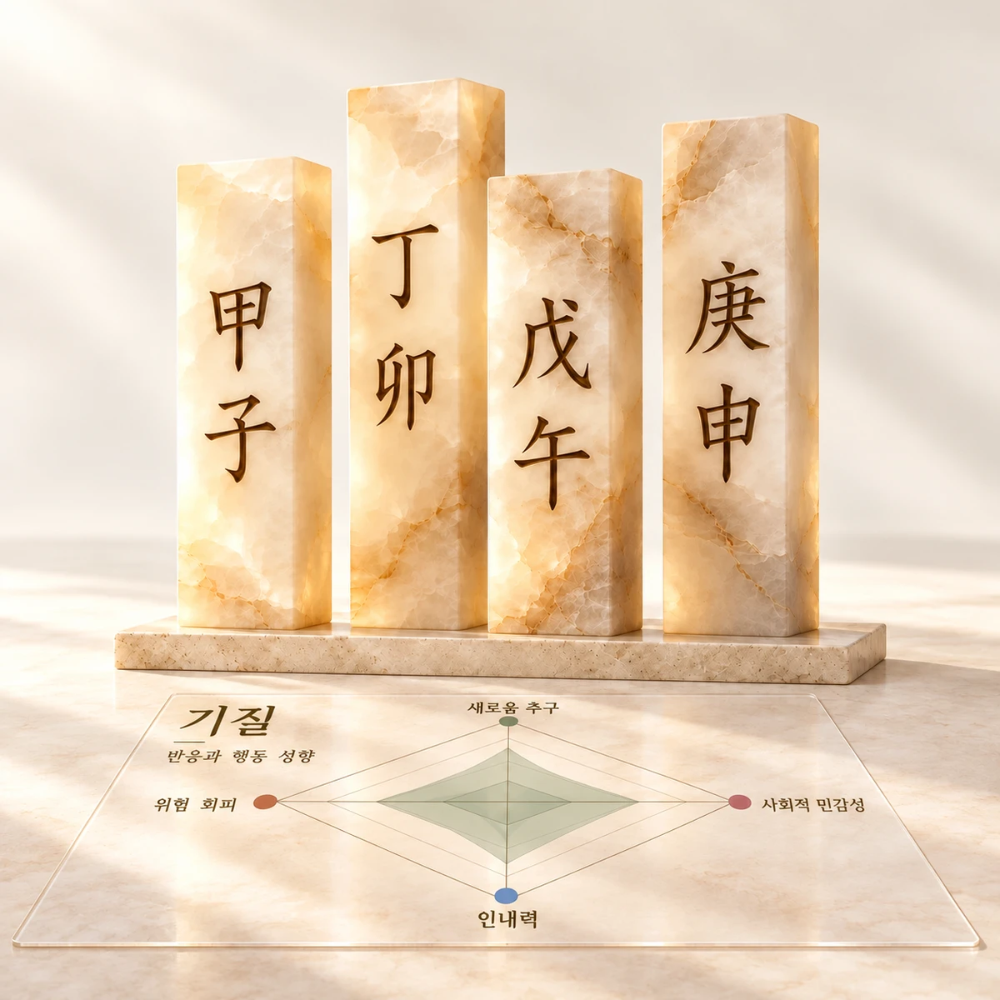
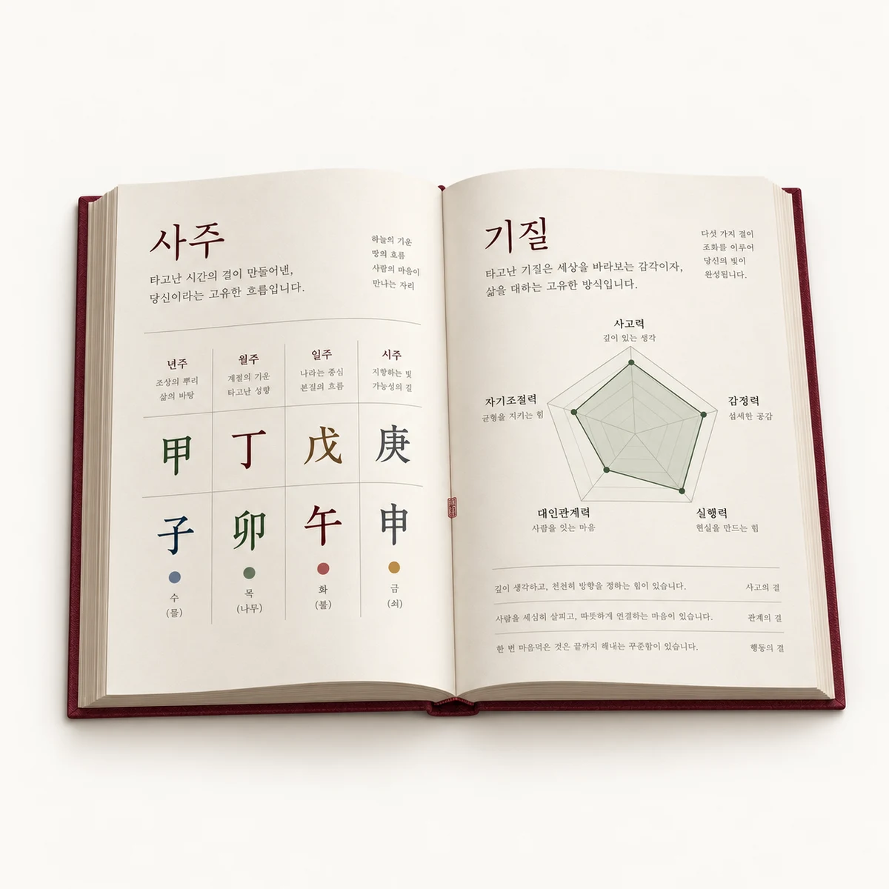

사주와 기질로 함께 읽는 나
사주에 기질을 더해
나를 더 선명하게
태어난 정보와 기질 설문을 함께 살펴
나의 성향과 선택의 방향을 읽어드려요.


베타 무료사주 풀이 · 기질 검사 · 통합 올해 운세
나를 이해하는 세 단계
01
사주
타고난 특징과 삶의 흐름
02
기질
평소의 반응과 행동 성향
03
통합
나에게 맞는 선택의 방향
사주와 기질로 함께 읽는 나
태어난 정보와 기질 설문을 함께 살펴
나의 성향과 선택의 방향을 읽어드려요.


베타 무료사주 풀이 · 기질 검사 · 통합 올해 운세
타고난 특징과 삶의 흐름
평소의 반응과 행동 성향
나에게 맞는 선택의 방향